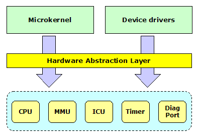

|
|
An Open Source, Royalty-free, Real-time Operating System |
Prex Home >
Document Index >
HAL Interface
|
|||
Prex Home >
Document Index >
HAL Interface
|
|||
For Prex version 0.9.0, 2009/10/01
The interface for the architecture dependent layer is defined to abstract a processor and minimum hardware in the Prex kernel. If you want to port the Prex kernel to new architecture or new platform, you have to modify the architecture dependent codes appropriately for your target system.

Figure 1. HAL interface
Some functions in this interface are optional on the specific target. For example, you don't have to implement the MMU support code if your target system does not have a MMU.
It is important to minimize the number of functions in this interface. This is because the porting work will increase if it has many functions. So, the functions in this interface are limited to minimum functions required to drive the Microkernel.
The following data types are defined by the architecture dependent layer.
| Data type | Description |
|---|---|
| context_t | Define a processor register set for the thread context. |
| pgd_t | Define a page directory for the MMU. |
The kernel and device drivers can use "boot information" which includes the boot configuration and other system data. Generally, almost all data in the boot information will be prepared by the boot loader before loading a kernel. In addition, the architecture dependent layer can write data into the boot information within machine_init() routine.
The format of the boot information:
struct bootinfo
{
struct vidinfo video;
struct physmem ram[NMEMS]; /* physical ram table */
int nr_rams; /* number of ram blocks */
struct physmem bootdisk; /* boot disk in memory */
int nr_tasks; /* number of boot tasks */
struct module kernel; /* kernel image */
struct module driver; /* driver image */
struct module tasks[1]; /* boot tasks image */
};
A context includes processor registers and additional per-thread information. context_t represents the pointer to the context structure of each architecture/platform. The kernel treats the pointer as a context ID and it does not touch the internal data of the context structure.
void context_set(context_t ctx, int type, register_t val); void context_switch(context_t prev, context_t next); void context_save(context_t ctx); void context_restore(context_t ctx); void context_dump(context_t ctx);
The architecture dependent code must provide the functions for Memory Management Unit (MMU). Even if the system does not support MMU, mmu_switch() must be defined as NULL macro.
int mmu_map(pgd_t pgd, paddr_t pa, vaddr_t va, size_t size, int type); pgd_t mmu_newmap(void); void mmu_terminate(pgd_t pgd); void mmu_switch(pgd_t pgd); void *mmu_extract(pgd_t pgd, vaddr_t va, size_t size);
The spl() function familly controls the interrupt priority level of CPU.
int splhigh(void); int spl0(void); void splx(int level);
The kernel abstracts whole interrupt related hardware. The architecture dependent interface provides only primitive routines to handle the interrupt.
void interrupt_mask(int vector); void interrupt_unmask(int vector, int level); void interrupt_setup(int vector, int mode); void interrupt_init(void);
void clock_init(void);
Since accessing to the user memory may cause a page fault, the manipulation of the user buffer is handled by each architecture codes. The following functions should detect the page fault and return an error if it can.
int copyin(void *uaddr, void *kaddr, size_t len); int copyout(void *kaddr, void *uaddr, size_t len); int copyinstr(const char *uaddr, void *kaddr, size_t len);
void machine_startup(void); void machine_idle(void); void machine_powerdown(int state); void machine_abort(void); void machine_bootinfo(struct bootinfo **);
void diag_init(void); void diag_puts(char *str);